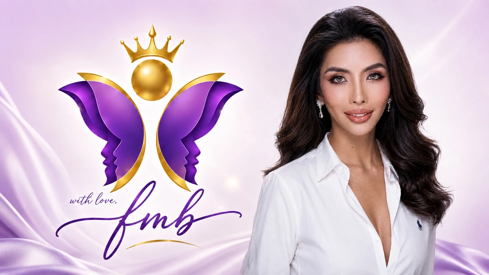
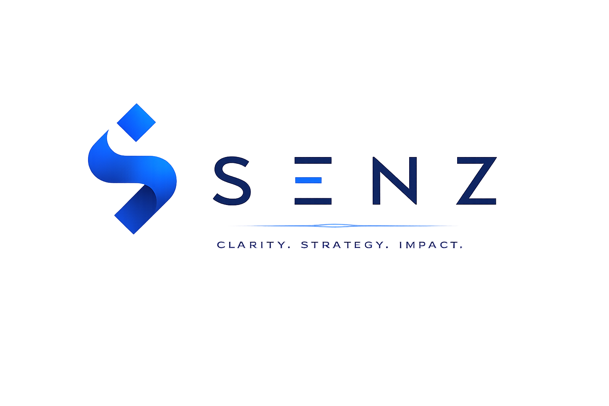

Read every guide
Explore complete materials about identity, health, dignity, emotional honesty, and self-care.
Welcome to With love, FMB
A community project created to help you read, reflect, listen, connect, and find support. Francine Marie Bautista brings thoughtful resources, original work, and community-led projects together in one clear place.

How our space can help
Public resources stay easy to reach. Personal tools remain inside the signed-in member space.
Explore complete materials about identity, health, dignity, emotional honesty, and self-care.
Play all ten Calm pieces and both With Love, FMB soundtrack versions.
Read positive reflections selected to make room for courage, healing, and hope.
Important emergency and support contacts remain available without a profile.
Your clear menu
Select a destination and go directly to the complete experience.
The woman behind the work
Filipina transgender brand strategist, creative director, educator, communications practitioner, and advocate from Masinloc, Zambales.
Meet Francine and explore her work →Our founder-led brands
Good work should return as good, with every project built for a clear and useful purpose.



Need help now?
These contacts stay public. With love, FMB is not an emergency, medical, psychological, or legal service.
Need women and child protection, DSWD, PCSO, PhilHealth, MDRRMO, or bilingual application guidance?
Open the complete Get Help pageFrequently asked questions
Learn what is public, what is under maintenance, and how organizations can work with our platform.
Request the current advertising tiers and website placement options. Only your name, business name, and email are needed to begin.
Advertise with usAn inclusive community project by Francine Marie Bautista for thoughtful reading, original music, public support, community service, and purposeful creative work.
Yes. All reading materials and all twelve published music tracks are open without an account while member services are being refined.
The Sign in and Create profile page is prepared. Access may be limited during maintenance, and the page clearly announces the current account status before any form is used.
The public wall is open for reading. Visitor submissions remain unavailable during maintenance and will require review before publication.
Yes, when the campaign fits our values and audience. Begin with your name, business name, and email to request the current advertising tiers and placement options. No campaign date is needed for the first inquiry.
No. Use the public emergency and support contacts above when real-time or professional help is needed.